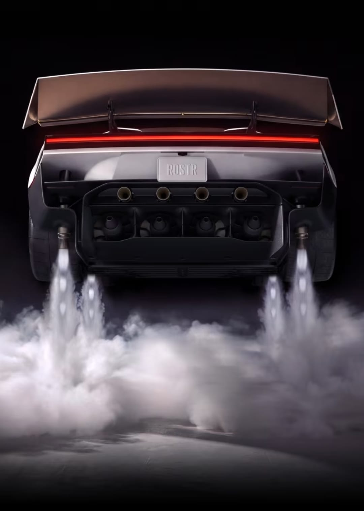
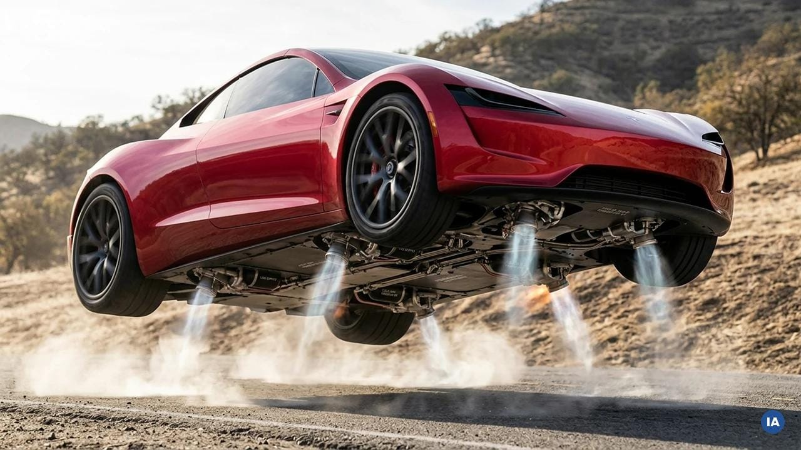
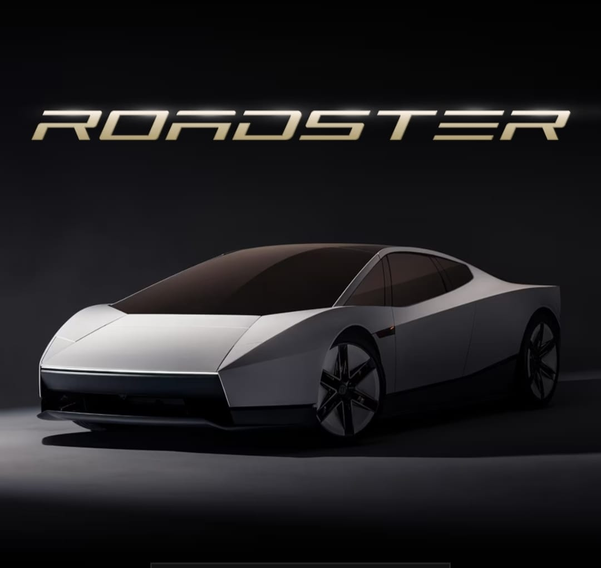

Tesla Roadster
Tesla’s new-generation Tesla Roadster has attracted worldwide attention because of its extreme performance claims and a demonstration in which a special version briefly lifted off the ground and performed an aerial flip. Unveiled on October 15, 2026, the car has reignited debate about whether the future of automobiles could include flying vehicles. Beyond its unusual demonstration, the Roadster represents the growing ambition of electric vehicle technology, combining extraordinary acceleration, advanced engineering, and futuristic design. While its performance claims have excited automobile enthusiasts and technology lovers, they have also raised questions about safety, practicality, affordability, and whether such innovations could become part of everyday transportation.

Key Higlights
Important Points about the new Tesla Roadster
 |
|
Is Tesla Roadster also called Flying Car
The special Tesla Roadster Rocket version is being referred to as a “flying car” in news reports and social media. Elon Musk has promoted its airborne capabilities, but there is an important distinction.

What makes it a flying car?
- Cold-gas thrusters can propel it briefly into the air.
- The demonstration showed a mid-air flip.
- A suction system helps the special version travel upside down on a purpose-built surface.
IMPORTANT:This is not yet a conventional flying vehicle that can cruise through the sky, carry passengers between cities or replace an aircraft. The Rocket version is not approved for public-road use.
Public Opinion
Public reaction following the October 2026 unveiling has been mixed, with excitement about the technology and skepticism about its practicality. The following views reflect reported reactions from commentators and technology figures, not a scientific survey of the general public.
| Positive Opinion | Skeptical Opinion |
| Supporters admire the futuristic design and extraordinary performance claims. | Critics question whether brief aerial stunts have meaningful everyday use |
| Some technology enthusiasts see the demonstration as an exciting step toward new forms of transportation. | Technology commentator Marques Brownlee expressed disbelief about some of the performance claims. |
| Sam Altman publicly praised the car's appearance, while investor David Marcus expressed excitement about the demonstration. | Safety, passenger protection and the feasibility of regular flight remain unresolved concerns. |
Conclusion
The Tesla Roadster is more than a conventional electric sports car in terms of the ambitions behind its design. Its special Rocket version has demonstrated brief airborne movement, which explains why the media and public are calling it a “flying Tesla” or “flying car.”
However, it is more accurate to describe it as an electric sports car with experimental rocket-assisted airborne capabilities, rather than a fully functional flying car. Its ultimate success will depend on whether Tesla can deliver the technology safely, legally and reliably.
